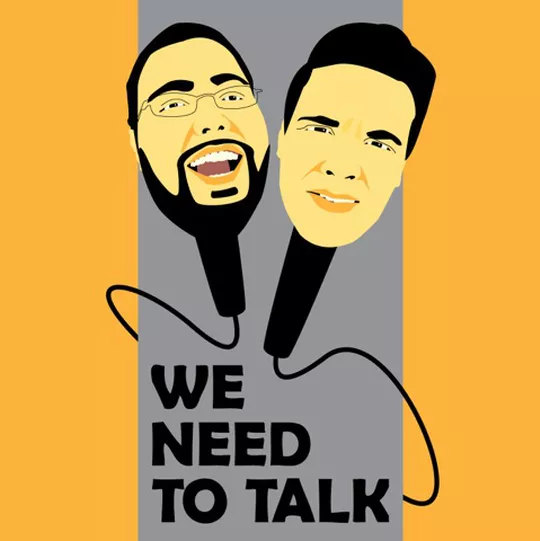

We Need To Talk 
What is We Need To Talk Podcast?
Pepin and Meader somehow combine the passion of a deep intellectual discussion with the levity of a comedy show.They have over 160 episodes out with releases every Monday.
Needless to say, they are NOT your average podcasters.
Read More About The Podcast In Our:
Listen Notes Interview
Listen to us on:
SpotifyItunes
Google Play Music
You can find us at:
Podcast NH
You can donate to keep the show going on:
Patreon